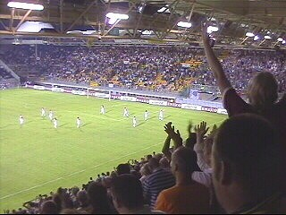

|
Roda JC - PSV (2-2) 15 augustus 2003 |
Arouna Kone stelt zich voor aan het publiek als
opvolger van Tom Soetaers.
900 PSV-supporters...
...met een mooie sfeer-actie!
Op zuid werd het grote ENECO-shirt over de
mensenmassa getrokken.
Scheidsrechter Bossen dreef het publiek tot
grote woede met zijn pro-PSV gefluit!
Kezman tikt een balletje van Rommedahl via de
paal binnen (11').
KVM-supporters waren wederom present !!!!!!!
Nadat De Jong Anastasiou neerhaalde binnen de
zestien, neemt Ioannis de penalty: 1-1 (38').
Geel voor Senden op een moment dat Bommel
en Jong ongestraft mochten rondschoppen.
Een fantastisch afstandsschot van Van Dessel
dat al stuiterend Waterreus passeert: 2-1 (44').
Zuid explodeert!
Sergio in duel met Bommel.
Kezman maakt een zeer fraai doelpunt: 2-2 (56').
Geel: Senden, Anastasiou, De Jong, Van Bommel
Rood: Addo, Sonkaya.
In de slotfase wanneer Roda nog maar met
negen man speelt, probeert Anastasiou voor
een verrassing te zorgen met een lob van grote
afstand. Wat twee seizoenen tegen Sparta
lukte, ging nu mis.
Bommel informeert bij Bossen of er nog niet
genoeg smeergeld is betaald.

De 2-2 wordt als een overwinning gevierd.
De Limburgse vlag hoort niet bij PSV.
After-party in het supportershome.
Forza Wim K. en zoon!
Mark met Cristiano.
Rob met Bavaria.

Simpelveld-crew al redelijk in de olie ;-)
© Koempels
Pleasure Dome